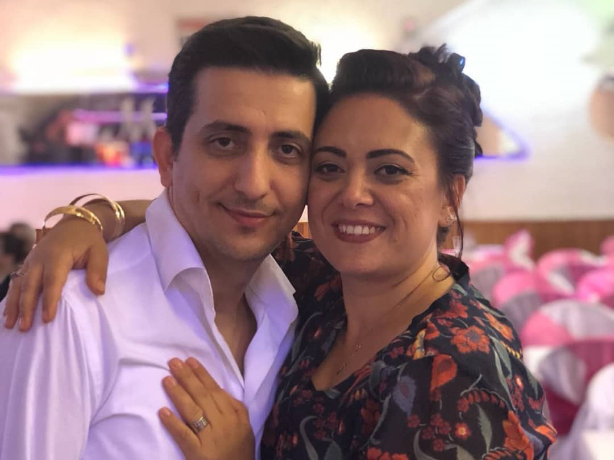

Saç kurtarma deneyimim: Kel kalmaktan nasıl kurtuldum?
Selam, ben Mahmut!
Erkeklere bir şey önermek istiyorum. Herkes kadınların saçlarının güzelliği hakkında yazdığı için erkeklerin kel olmaktan başka çaresi yok!
Gerçek şu ki, birçok kadının bunun farkında olmadığını unutmayın, hepimiz er ya da geç kel kalmaktan korkarız. Ve ben de istisna değilim!
Saçlarımı kaybetmeye 25 yaşımdayken başladım. 30 yaşındayken, çok büyük bir kel noktam vardı. Önce farklı saç ürünlerine geçtim, sonra saç kesimimi değiştirdim, sonunda pes ettim. Hiçbir şeyin benim için faydası olmadı! Dürüst olmak gerekirse kafamı tıraş etmek üzereydim. Ama karım bu sorunla savaşacağımızı söyledi.
Saçlarım için verdiğimiz savaş
İlk önce karımın ısrarı ve beni ikna etmesiyle, saçım ve saç derim hakkında konuşmak üzere birlikte bir uzman görmeye gittik. Testlere oldukça para ve birkaç hafta vakit harcadık. Ama sonunda, yılların tecrübesine sahip uzman, omuz silkti ve sorunun aile genlerimden kaynaklandığını söyledi ve bununla ilgili yapılabilecek hiçbir şey olmadığını söyledi... Ama karım pes etmeyeceğini söyledi. Ve işte karımın bulduğu çözüm:
1) Geleneksel tarifler
Bana kalsa asla böyle bir yola girmezdim ama karım geleneksel maske tarifleri denemekte ısrar etti. Arpa kaynatma, şalgam yağı, kırmızı biber denedik. Ancak hiçbiri sonuç vermedi, korkunç bir koku ve rahatsız edici saç derisinden başka bir şey elde edemedik.
2) Süpermarket ürünleri
Market raflarında bulunan tüm şişeler harika görünüyor, hoş kokuyordu ve içeriklerinde bir sürü güzel şey bulunduruyordu. Ama bu ürünler durumu daha da kötüleştirdi. Saçlarım dolgunlaşmadı, aksine kaşıntı ve kepek başladı. Denemeyi bırakmayı tercih ettim.
3) Şampuanlar ve profesyonel maskeler
Bu benim son umudumdu! Maaşımın neredeyse yarısını bu lüks ürünlere harcadım. Ve tamamen sonuçsuz kalmadığımı söylemeliyim. Saçlarımın hızlıca dökülmesi durdu ama bu benim peşimde olduğum sonuç değildi.
NE PAHASINA OLURSA OLSUN ESKİ SAÇ ŞEKLİME GERİ DÖNMEK İSTİYORUM
Sevgilim destek verdi, ne olursa olsun benimle olacağını söyledi.
Fakat bu durumla barışamadım, sadece birkaç ay sonra KELLEŞECEĞİME inanmıyordum! Kel kafamla bu kadar güvenle yürümek için Bruce Willis veya Patrick Stewart olmalıydım. Açıkçası, birkaç kez banyoda bile ağladım. 30 yaşımda kel bir kafayla yürümek istemiyordum. Bence bundan daha kötü bir ihtimal olamaz.
Fakat mutlu son gerçek oldu. Bone Marrow saç büyüme serumu'nu buldum.
Kafamın bir buçuk aydan kısa sürede nasıl değiştiğini görün! Artık kel yamaları saklamak için kafamı traş etmek zorunda değilim. Kim düşünebilirdi ki, çözümü eczanede veya doktorda değil, sadece internette bulacağım. Ne ve nasıl olduğunu bilmiyorum, ama bu serum bana doğrudan yeni bir hayat verdi. Aktif yaşamak, başarmak istiyorum, kendime ve gücüme tekrar inandım ve hatta yeni bir iş kurdum.
Kısacası şöyle, arkadaşlar, kafanızın bazı bölgeleri parlamaya başladıysa, tavsiyem şudur - bu sorunu çözmeyi ertelemeyin. Bana yardımcı oldu ve kesinlikle size de yardımcı olacaktır! Bone Marrow saç serumunu eve teslim ile üreticinin web sitesinden sipariş edebilirsiniz. Hiçbir yere gitmenize bile gerek yok.
Mahmut Çelikkılıç
Yorumlar
Doktorların hala kelliğe çare bulamadıklarına şaşırıyorum. Genetik her şey için bir bahane olamaz.
Bana bu sorunun çok bireysel olduğu söylendi, ancak tedavi edilebilirmiş. Daha sonra ortaya çıktığı gibi, saç ekimi anlamına geliyordu!
Saç nakli bugünlerde çok popüler ama aynı zamanda çok pahalı. Ancak Bone Marrow saç serumunu çok daha ucuz bir yöntem. Sanırım deneyeceğim.
Ben sadece 4 hafta Bone Marrow saç serumunu kullandım. İşte sonuç
Saç serumunu hiç inanmazdım. Sadece kadınlara faydası olduğunu düşünürdüm. Ama karım beni Bone Marrow saç serumunu denemeye ikna etti. Ve onu dinlediğim için mutluyum. Sanki hiç kel olmamışım!
Bu ürün hem erkekler hem kadınlar için uygun. Saçın büyüme mekanizması her iki cins için de aynı şekilde çalışır.
Bir süredir bu serumunu almayı düşünüyordum. Kadınlar için olduğunu sanıyordum. Ama kel kalmaya başladığımı keşfettiğimde çok korkmuştum, Bone Marrow saç serumunu denemeye karar verdim. Çok faydası oldu. Bu maske tam bir mucize!
Merhaba, bir paket ne kadar yetiyor?
Bu tasarruf etmenizi sağlıyor. Sadece 3 günde bir kullanın. Benim durumumda 6-8 hafta yetti.
Güzel! Aynı şeyi kocam için de sipariş edeceğim!
Ben de Bone Marrow saç serumunu ürününün işe yaradığını onaylamak isterim. Benim sonuçlarım.